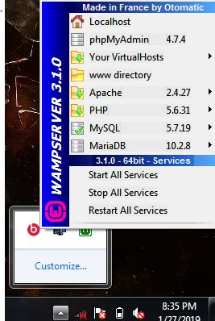

The main idea behind this project was the rush of a college life. There are many extra curricular activities going on throught the campus. Not everyone is able to cope up with the studies and keep himself updated. So when exams are near, all students rush to gather notes and books to prepare for exams. As there are many different resources, but these are not properly arranged. So to overcome this difficulty, we developed a dynamic website called University Network. (As it is being upgraded hence it is currently running in localhost.)
Note : Before diving into project, you should have basic knowledge of web.
The model of the project is described below.
Basic working of a dynamic website
A dynamic website is the one in which user request for a data (or sends a data) using http request to the server. The server is programmed in such
a way that it reads what user has requested. It makes certain queries to the databases and fetches (or saves) the data from the database and shows it on
the users screen.
So it is basically three layered architecture:
- Front end: It consistes of the html pages which user/client sees on its web browser (eg: chrome).
- Back end/Server side: It consists of the scripts written on scripting languages(we have used php here) on the server.
- Database: It consists of the database to store the files or paths to the files in a tabular.
Resources used in this project
In this project, we have used the following resources:
- Front end: The front end is developed using html/html5, css, javascript, ajax, jquery and bootstrap.
- Back end: The backend is completely coded using php.
- Database: MySql batabase is used for backend.
After installing WAMP You will get the following links shown in the image to your database and localhost:
 WAMP Server linksOnce the server is set, you need to build your entire project inside the www directory of the WAMP Server. Since localhost's default path is set in the www directory.
Planning of the project
Before going practical, we need to know what we are going to make.
So for this project, we decided to make a front page. Whenever a user will open
the website, he'll visit that page.
On that page, there'll be three forms enteries,Students login, members login and admin login.
Every form entry will take user to its respective page. At the backend, php scripts will connect the user with the MySql database. This is the overview of the
project.
Frontend Designing part
Make a folder inside www directory and put all your front end files inside that folder. Here we will first make a home page.
To make home page, we have used bootstrap and css and form fileds are linked to their process php pages. Using bootstrap will make the website compatible
with mobile phones and small devices.
The home page in different formats is shown below:
 Home page top
Home page top
 Home page bottom
Home page bottom
 Home page optimized
Home page optimized
 Home page optimized navigations
Home page optimized navigations
After filling the authentication details in admin, members and students section, the action will go to the server where php files reside. Once the authentication is successful, the user will be taken to students, members or admin pages. These pages are also coded using bootstrap and css.
- Students page will give access to students which are allowed only to search for the notes and download them.
 Students page
Students page - Members page will give access to members of the website which are allowed to add the notes as well as search for the notes and download them.
 Members page
Members page - Admins page will give access to admins which are allowed only to manage the webiste.
 Admins page
Admins page
Backend scripting
Now whenever a form field is filled in front end, its action is proceeded in the backend. Suppose we fill the login details of Students and press login button, the flow will go to the students_process.php at the server. Now it will use sql queries to connect with the database and will check if the entered user id and password is correct. If it is correct, it'll take user to students.php page. And if the details are incorrect, it'll redirect the user to index.html(home) page. For sample, students_process.php is given here.
The code snippets and reference to this project is given in my
github repository .
Thank You for reading.